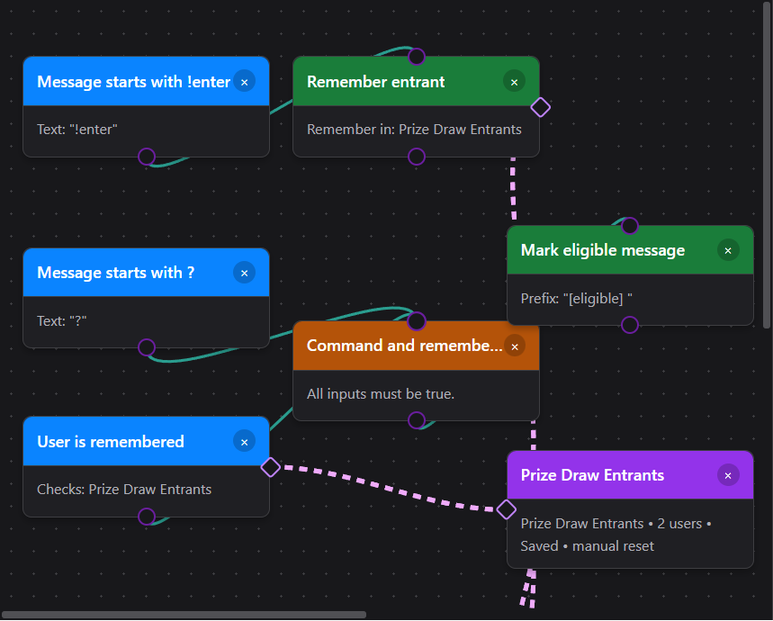
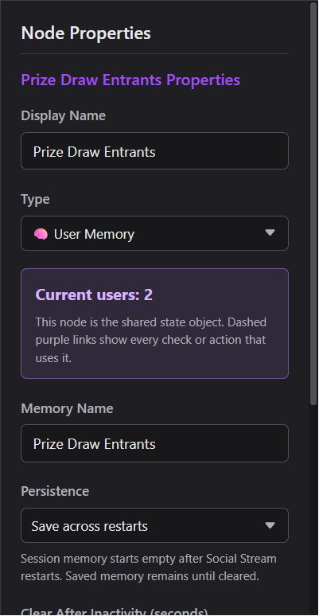
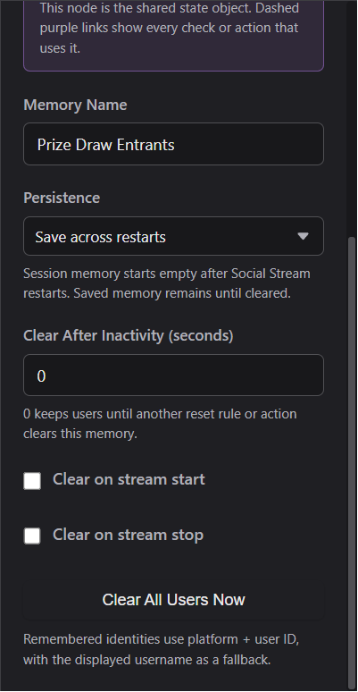
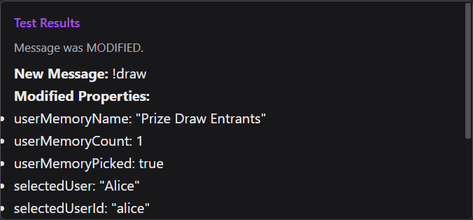

One named memory, many tools
Drag the small purple side diamond onto a User Memory node, or choose the memory by name in the node properties. Internally the operation stores the state node’s ID. Selecting the memory highlights every linked operation, and deleting it warns before those links are broken.

Seadke see üles
- Drag State Nodes → User Memory onto the canvas.
- Name it for the list it owns, such as Heart Me Eligible, Liked Stream, või Prize Draw Entrants.
- Valige This app session või Save across restarts.
- Add the checks and actions you need, then link each one to the named memory using its side diamond or dropdown.
- Connect the normal event path with teal wires and use Test Flow with two different usernames before going live.
Available operations
| Node | Mida see teeb |
|---|---|
| Remember User | Adds the current event’s user once. Repeated participation increases that user’s participation count without adding duplicate draw entries. |
| User Is Remembered | A trigger/check that returns true when the current message belongs to someone in the selected memory. |
| Forget User | Removes only the current event’s user. |
| Pick Random User | Selects one unique remembered user. It can optionally remove the winner so they cannot win again. |
| Clear All Users | Empties only the selected User Memory object. |
| Reset State Node | Also clears a User Memory when that memory is the selected reset target. |

Practical recipes
TikTok Heart Me or Team Member → ? TTS
Use the gift event to remember the sender; do not try to turn the one gift row into a permanent “member” role.
- For TikTok Team/Fan status, choose User Role → TikTok Team Member. It reads the incoming TikTok badge/level data directly; the Main Chat Overlay’s “treat as members” display setting is not required.
- Gift payloads differ by capture mode. A common setup is Event Type → Other: gift plus Message Contains: Heart Me. Confirm the captured row in Test Flow/Event Reference and match the cleanest field your source provides.
- Both branches still require the leading
?, so other platforms speak for everyone while TikTok stays restricted.
Remember people who liked or participated
This works when the captured like/participation event names a user. Aggregate like-count updates do not identify a person and therefore cannot be remembered. Use a separate memory for each kind of participation if you want independent checks or draws.
Unique-entry prize draw
Enable Remove selected user when winners should not be drawn twice. In a public stream, protect draw/reset commands with a moderator, admin, or exact-user check.
Reset and persistence
Manual
Kasuta Clear All Users Now in the memory properties while building/testing.
From a flow
Kasuta Clear All Users or the generic Reset State Node, selecting the exact memory.
Automaatne
Clear after inactivity, on stream start, or on stream stop. A value of 0 disables inactivity reset.
Across restarts
Session memories start empty with the app. Saved memories reload until that specific memory is cleared.

Use draw and participation outputs
Memory actions add fields to the message so downstream Show Text, Send Message, webhook, or custom actions can use them.
| Field | Tähendus |
|---|---|
userMemoryName | The selected memory’s name. |
userMemoryCount | Unique users currently remembered. |
userMemoryAdded | True only when Remember User added a new unique person. |
userMemoryEntryCount | How many times that person has participated. |
selectedUser | The drawn user’s display name. |
selectedUserId, selectedUserSource | The drawn user’s stable ID and platform. |
selectedUserParticipationCount | The winner’s recorded participation count. |
selectedUserReason | The latest reason template saved by Remember User. |
selectedUserRemoved | Whether the draw removed the selected winner. |

Tõrkeotsing
| The dashed line is missing | Select the operation and choose a User Memory target, or drag its purple side diamond to the memory hub. |
|---|---|
| The same person appears twice | Check whether the events came from different platforms. Platform + user ID intentionally creates separate identities. |
| A like did not add anyone | The event probably had no user identity. Inspect the event payload; aggregate counts cannot become named entrants. |
| A saved memory came back | Use Clear All Users on that memory. Changing a flow or clearing a different memory does not erase it. |
| Anyone can run the draw/reset command | Add User Role: moderator/admin (or an exact host-user check) into an AND gate before the action. |